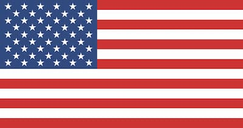

David Hostetter
About Me
My name is David Hostetter. I am currently studying web development and learning how to build websites using HTML, CSS, and JavaScript. I enjoy technology, gaming, and spending time with my family.
Idaho, United States

Idaho is located in the northwestern United States and is known for its mountains, rivers, forests, and outdoor recreation. It is also famous for agriculture, especially potatoes.